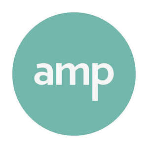

Trade Mark Journal No.2025/044 31 October 2025
UK00004278641 15 October 2025 (9,25,35,41)

- Class 9
- Downloadable podcasts; audio and video recordings; downloadable videos; computer games; downloadable multimedia files containing artwork, text, audio, and video files; downloadable electronic publications in the nature of books, magazines, journals, leaflets, and newsletters; software applications in the field of antenatal, maternity and baby care, cosmetics, beauty, fashion, lifestyle, and travel; downloadable mobile applications in the field of antenatal, maternity and baby care, cosmetics, beauty, fashion, lifestyle, and travel; downloadable mobile applications for the provision of antenatal, maternity and baby care tips and tutorials; downloadable podcasts in the field of antenatal, maternity and baby care, cosmetics, beauty, fashion, lifestyle, and travel; downloadable videos in the field of antenatal, maternity and baby care, cosmetics, beauty, fashion, lifestyle, and travel; electronic publications, downloadable, in the nature of e-books, online magazines, newsletters, online newspapers, electronic journals, blogs, podcasts and vlogs.
- Class 25
- Maternity pants; maternity underwear; maternity tops and t-shirts.
- Class 35
- Advertising and promotional services; advertising and promotional services provided by means of social media; publicity and promotional services; influencer marketing; promotion of goods through influencers; advertising and marketing services provided by means of social media; providing marketing consulting in the field of social media; organisation of events for commercial and advertising purposes; arranging of competitions for advertising purposes; rental of advertising space; retail services in relation to maternity clothing, baby clothing, baby accessories, cosmetics, nutritional supplements, bags, software, games, jewellery, stationery, printed matter, books; information, advice and consultancy in relation to the foregoing.
- Class 41
- Creation of podcasts; writing of content for podcasts; production of podcasts; writing texts; education; entertainment; providing of training; arranging, conducting and organisation of courses, seminars and workshops; organisation of educational and/or entertainment events; providing electronic publications (not downloadable); provision of online tutorials; arranging and conducting of tutorials; providing on-line videos (not downloadable); production of videos; production of training videos; publication services, namely books, newsletters, blogs and vlogs; video education services; publication of education and training materials; organisation and conducting classes, seminars, workshops, conferences and exhibitions; exhibition services; publishing of reviews; organising competitions; arranging and conducting of interactive games, interactive entertainment and interactive competition services; educational group support sessions; conducting educational support programmes; conducting educational support programmes for parents, guardians and caregivers; information, advice and consultancy in relation to the foregoing.
A MOTHER PLACE LIMITED